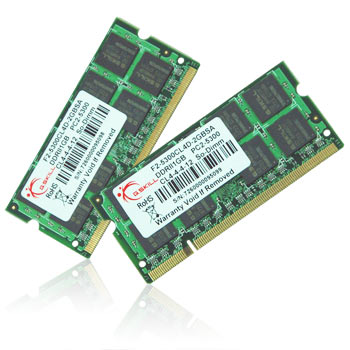

Mémoire vive appelé aussi mémoire ram (Random access memory), c'est la mémoire principale du système elle va stocker temporairement les donnée qui vont être traités par le processeur.A noter qu'une fois l'arrêt ou redémarrage de l'ordinateur cette mémoire se vide
La mémoire est caractérisée par sa capacité, elle est mesurée en octet.
Généralités sur le codage de l’information : Les informations traitées par l’ordinateur sont de différents types (image, texte ; son….), mais elles sont toujours représentées sous forme binaire. L’information élémentaire, dans un système binaire est le « Bit » (Binary Digit) ; un bit ne peut prendre que deux états 0 ou 1.
